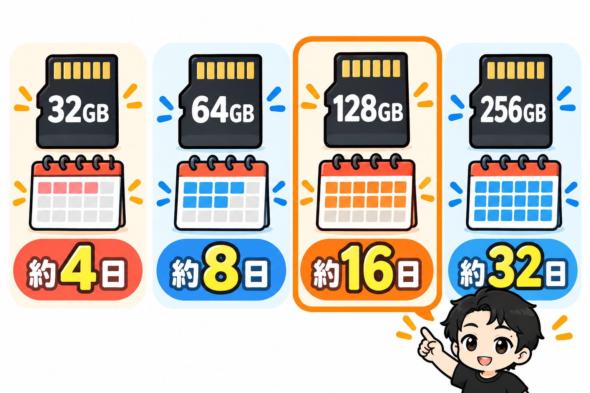
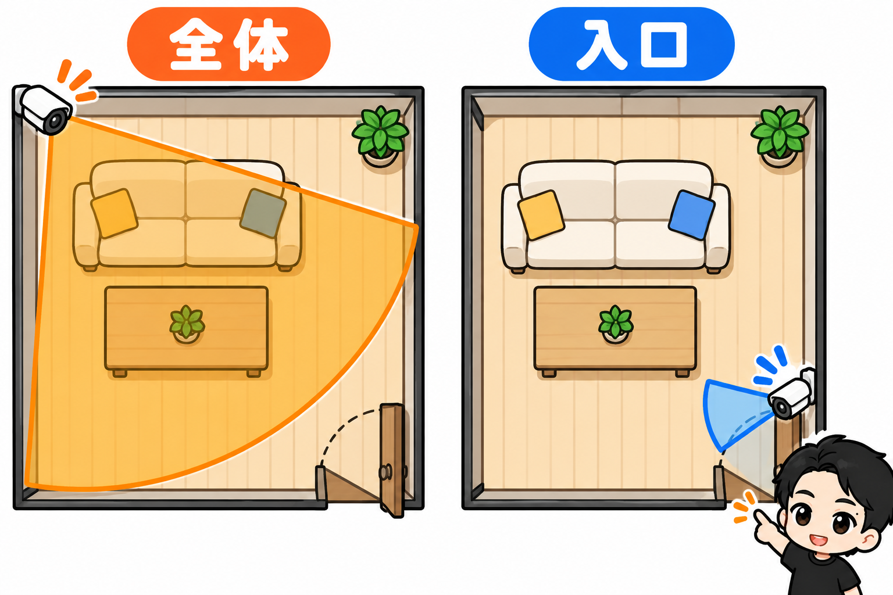
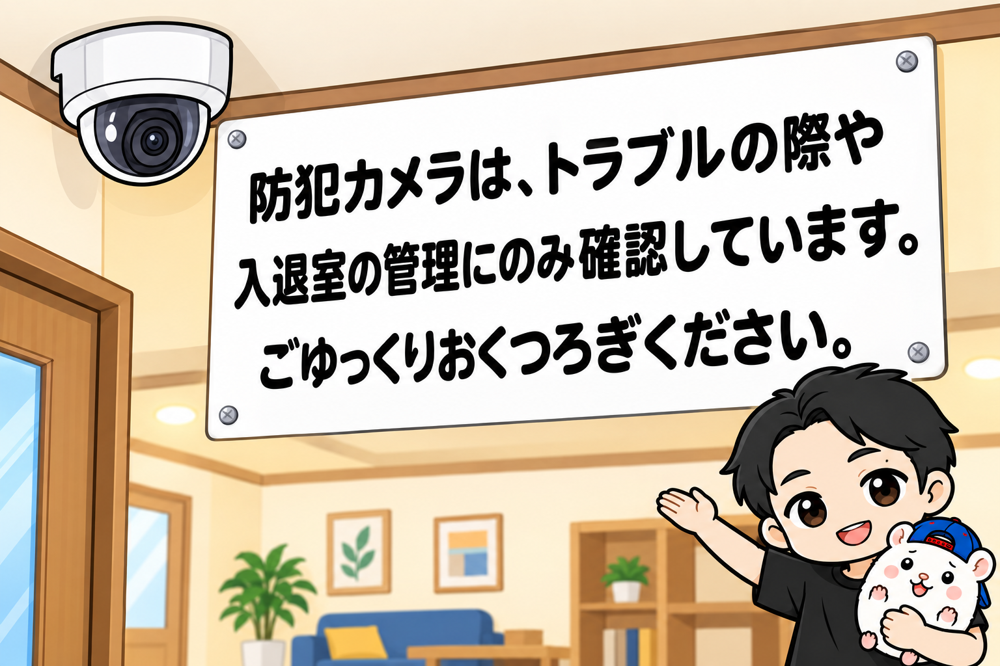
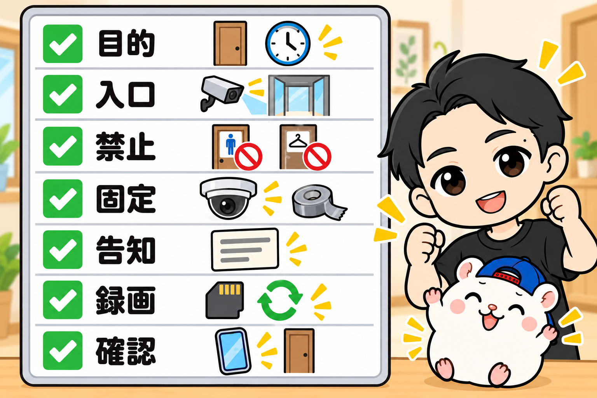

多くのレンタルスペースは、部屋全体が映る位置に防犯カメラを付けています。
でも、ぼくは入口に向けています。
5年で23部屋を運営してきた、ぼくの防犯カメラの運用を、手順の順番にまとめました。
これから付ける人も、もう付けている人も、チェックに使ってください。
1. 目的を決める
最初に決めるのは、何のためにカメラを付けるかです。
ぼくの目的は、2つだけ。
・入退室の管理(予約の時間どおりに出入りしているか)
・トラブルのときに、カメラ越しに話すこと(電話が繋がらない場合)
目的が決まれば、付ける場所も、見るタイミングも決まります。
2. カメラとmicroSDをそろえる

カメラは、TP-LinkのTapo C200を使っています。
4,000円弱で、双方向で話せて、スマホから映像を見られます。
▼Tapo C200
https://link.amazon/B0gEfYnbP
録画は、カメラに入れるmicroSDカードです。
容量で迷う人が多いので、TP-Linkの公式の目安を書いておきます(フルHD・24時間録画)。
| microSDの容量 | さかのぼれる日数 |
|---|---|
| 32GB | 約4日 |
| 64GB | 約8日 |
| 128GB | 約16日 |
| 256GB | 約32日 |
ぼくは128GBを使っています。
汚れや破損に気づくのは、次の清掃や次の利用のときが多いもの。
2週間ほどさかのぼれれば安心です。
▼ぼくが使っているmicroSD
https://link.amazon/B0952je7K
これは、ふつうのタイプです。
TP-Linkは、24時間の録画はカードが傷みやすいので、見守りカメラには「高耐久」タイプをすすめています。
これから買うなら、高耐久も候補に入れてください。
3. 付ける場所: 部屋全体ではなく、入口

部屋全体を映す店が多い中で、ぼくは入口に向けます。
目的が「入退室の管理」と「トラブルのときの声かけ」なら、入口が映っていれば足ります。
誰が、いつ入って、いつ出たかが分かるからです。
室内に向けるのは、入口向きに付けられる場所が、どうしてもないときだけ。
室内を映さないのは、プライバシーのためです。
自分がお客さんだったら、ずっと見られているみたいで嫌だからです。
室内のカメラを止められる「カメラOFFオプション」を用意している店も多いです。
とくに小さなパーティースペースで。
ぼくは、やったことがありません。
そもそも室内に向けていないからです。
「室内にカメラが向いていない」こと自体が、選ばれる理由になると思っています。
そして、トイレ・更衣室・シャワー室は、絶対に映しません。
服を脱ぐ場所をのぞき見たり、撮ったりすれば、法律で罰せられることがあります。
スペースマーケットの公式マガジンも、これらの場所への設置を「絶対に禁止」としています。
4. 触られないように付ける
オーナー仲間の悩みでいちばん多いのが、「隠された」「電源を抜かれた」「向きを変えられた」です。
ぼくの答えは、そもそも触れない場所に付けること。
・天井に付ける
・プラグは、壁と同じ色のビニールテープで固定する
止まったときに遠隔で電源を入れ直せるよう、スマートプラグにつなぐオーナーもいます。
5. 告知する: ポータルと、カメラの横

告知は、2か所に同じ1文を書いています。
ポータルサイトの説明と、室内のカメラの横です。
「防犯カメラは、トラブルの際や入退室の管理にのみ確認しています。ごゆっくりおくつろぎください。」
室内のカメラを予約ページに書き忘れて、「盗撮だ」と責められた例もあります。
カメラの横に貼る掲示物のひな形は、教科書の付録にも入れています。
告知の義務は、個人情報保護委員会のQ&Aでは、こう書かれています。
・防犯のためと見て分かるなら、目的の通知や公表はいらない
・撮られていると気づけない付け方なら、「防犯カメラ作動中」の掲示などで、気づけるようにしないといけない
・見てカメラと分かる場合でも、掲示するのが望ましい
見える場所に付けて、掲示と予約ページで知らせる。
これがいちばん安全です。
6. 録画の設定
カメラのアプリで、「ループ録画」をオンにします。
microSDがいっぱいになったら、古い映像から上書きされます。
個人情報保護委員会も、保存する期間を決めて、いらなくなったら消すようにすすめています。
128GBなら、約16日で古い映像から入れ替わっていきます。
映像を見られる人も、しぼっておくのが安全です。
アプリのパスワードを守って、見られる人を限っておきます。
7. 見るのは、入退室とトラブルのときだけ
ふだんは、映像を見ません。
告知の1文に書いたとおり、見るのは入退室の確認と、トラブルのときだけです。
たとえば、時間を過ぎても出てこないお客さんがいたら、まず電話。
出なければ、カメラのスピーカーから「お時間です」と声をかけます。
個人情報保護法とは別に、肖像権やプライバシーの問題もあります。
裁判では、撮る場所・目的・付け方・必要性などを合わせて判断されます。
目的をしぼって、見る場面もしぼる。
入口に向けるやり方は、この考え方とも合っています。
※法律の話は一般的な内容です。個別のトラブルは弁護士に相談してください。
まとめ: 防犯カメラの運用チェックリスト

□ 目的は、入退室の管理とトラブルのときの声かけ
□ カメラは入口に向ける。室内は、付ける場所がないときだけ
□ トイレ・更衣室・シャワー室は、絶対に映さない
□ 天井に付けて、プラグはテープで固定する
□ ポータルとカメラの横に、見る目的を1文で告知する
□ microSDは128GBで約16日分。ループ録画はオン
□ 見るのは、入退室とトラブルのときだけ
あなたのお店のカメラは、どこを向いていますか?
▼もう1つの副業、AI社員だけのeBay輸出店の実録🐹
https://note.com/cham_ebay
▼ブログ(レンスペ×eBay、全記事まとめ)
https://rental-space.net
レンタルスペースの数字とやり方は、教科書にぜんぶ書いています。
レンタルスペース経営の教科書
https://rental-space.net/kyokasho/
販売価格は3部売れるごとに2,000円ずつ値上がりします（上限あり）。内容・最新価格は販売ページをご確認ください。